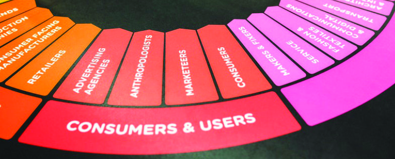
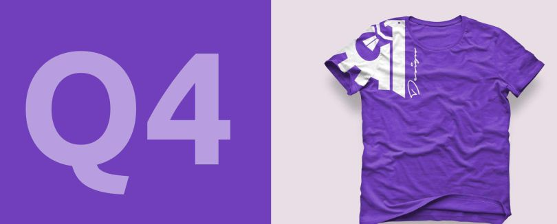

How to start your own graphic design business?
You’ve been working for a graphic design firm for a number of years and have built up a strong portfolio, or perhaps, you have a good hold of graphic design programs such as Adobe Photoshop, Corel Draw to mention just a few, and yet you don't monetize it. If you belong in either category and wish to start making a living off graphic design, then this article is for you. You can become a freelancer, or start a graphic design business of your very own. Please note that graphic design can also be referred to as creative design. Although this is not always correct, as creative design is of much larger scope. Before you take the decision to leave your day job (if you already have any), read these 12 steps to maximise your chances of success.
-
-
Ask yourself: are you motivated enough?
Photo by Jonas Svidras from Pexels
This may sound like a crazy question to ask, but if you think you’d really, really like to run your own graphic design business, hesitancy, procrastination, indecisiveness, or any degree of commitment will only result in frustration, aggravation and ultimately, failure.
As long as the skills are there, starting a graphic design business is the easiest part of the whole process – maintaining your initial enthusiasm and swing is the tricky part, so think carefully before making that life-changing decision.
Rolling out your own graphic design business involves juggling with other schedule, struggling to form a good relationship with clients, maintaining a good brand, dealing with different kind of character, and perphaps, taking additional creative design courses. It’s not easy as it seems, but if you’re commited and stay positive, it can be extremely rewarding.
-
Assess your skills
Photo by rawpixel.com from Pexels
Be truthful to both yourself and your potential clients. First ask yourself what you can do and what you can't in terms of providing creative services. By the time you start publicizing your new business, you would surely recieve calls from potential clients requesting a wide variety of design services. To protect your image, you should only focus on your main skills while you develop in other areas. You can however employ more hands, but make your staffing requirements obvious to whoever you are willing to employ.
Often times, graphic designers are called upon to produce:
As a consequence, it is very crucial that you share a close relationship with a number of suitably qualified contacts to whom you can sub-contract work with.
Carve yourself a niche and become a specialist in an area, such as 2D animation.
- Logos and branding
- Business cards
- Website design
- Design for social media
- Design for animation
- Stationary
- Billboard and banners
- Print design, such as books, brochures and flyers
- Typography design
- User Interface design
- Packaging design
- Print advertisements
- Restaurant Menus
- Infographics
- Logos and branding
-
Develop your skills…
If at any point you feel your skills are limited, or perhaps you just need more experience, then studying another course in graphic design or an entirely different field such as Web design or Search Engine Optimization is a great way to develop your skills and boost your confidence.
Udemy and Envato Tuts plus offer a host of graphic design courses and tutorials. You can also use Youtube, and forums such as Nairaland to your advantage.
-
What is your ultimate goal?
Now we know that you want to start a graphic design business, but what makes it stand out from the rest? How will you evaluate its progress? How far and wide do you wish to go? Where are you now, and where is it you want to be in, say, two years time? Who are you targetting? The big companies, or the small and medium scale businesses? You need to answer these questions, too.
This requires re-assessing your current situation and how you might as well leverage the best possible available opportunities.
Finance is the number one concern for many new businesses, so If you are already employed in another creative design firm, resist the temptation to poach clients as this will only create tension and earn you a bad reputation within the industry. Also, it is ethically seen as an act of betrayal to your employer.
If you are a recent graduate, there are usually a handful of government schemes such as NYSC, n-Power, e.t.c., that can financially assist you with the required funds when establishing your own graphic design business. Although, such government schemes might not make a larger part of your budget because they are rarely even enough, with proper planning, you should be able to purchase one or two tools from the stipend. I bought my second laptop which is the HP Mini 5103 laptop from the money i saved up during my NYSC. I use it to get less resource-intensive graphic works done on the move.
-
Identify your target market
Photo by Kaboompics.com from Pexels
No matter how much you would like to, you will never be able to provide all of the graphic design services your potential clients might ask for.
As mentioned earlier, you should concentrate your energy on a specific section of the creative market and aim to provide a first class service in the first instance.
While sub-contracting a few projects can be lucrative, liaising between your clients or contractors may be time-consuming.
Also, you may be blighted with uncertainities surrounding quality assurance and delivery deadlines.
You must have a mental picture of what your ideal client looks like.
Ask yourself who they are, where they are, what service(s) do they require and what is their budget likely to be?
The requirements of a small-scale business will definitely be different to those of a typical birthday celebration, so it pays to be aware of your client’s expectations at all times. -
See what your competitors are doing
First conduct a research on the graphic design businesses opportunities in your geographical area – focus on those competing for clients within your target market.
Compile a complete list of what services your competitors provide, how much they charge and how they charge, when and where they advertise.
Do your competitors offer any form of incentive to their customers such as discounts or loyalty bonuses?
Don’t forget to look online. Many businesses operate from a physical outlet and provide an online service too, others are provided solely online.
You should revisit and revise your competitor research on a regular basis as a good business will be constantly refining its tactics and strategy.
If your business has a website, use an SEO analysis software to find out why your competitors are ranking higher in search engine search results, and use your findings to improve your own website ranking.
An example of such software is Moz. [moz.com] -
Outline a price list for all your services
Now that you are armed with enough information about your competitors. you should be able to decide how you will charge for your services.
Will you charge each client an hourly rate or will you be a paid on a project-by-project basis? Although, I have rarely seen the hourly-rate method work in Nigeria, but both methods have their advantages.
To apply the hourly-rate method, you would need to be able to scope the total amount of time you would spend on the project. If you chose to go by the hourly-rate method and estimate that a project would take a certain number of hours, but somehow, your estimated time of completing the project is delayed by a significant amount of time, you will undoubtedly annoy the client.
Equally, underestimating the complexity of a project could result in you failing to make a profit or even running at a loss.
Many entrepreneurs prepare for unforeseen expenses by applying a 'financial cushion' into their pricing structure. This is usually done by adding 10% to the total estimated cost of the project.
You may also have regular clients who would require your services on an ongoing basis and will have to determine a monthly rate for them. This monthly fee is known as a retainer. -
Don’t forget the legal bit
Image source: Pixabay
If you really, really love your brand, you should never take any chances. You should seek legal advice and devise a template for any contract you enter into with clients. This template should come in a format that will enable you to customise details and information according to the requirements of each project.
At the very least, you are expected to have a document that captures all contact information, the service requested, the schedule for delivery, the anticipated cost, what has to be supplied by the client before the job will commence, transfer of rights, llimitation of liability, terms and conditions of service, privacy policy, and your cancellation policy.
If your business has a website, and you have clients in Europe who use the website, because of the new General Data Protection Regulation (GDPR) law,it is important that you add what is known as a cookie consent notice to your website, this is crucial if you want to avoid paying potentially hefty fines.
If you land a big contract, saving money by drafting your own contract terms is not always a good idea – for example, some of the above terms may seem new and confusing to you, so seek advice from a legal professional. -
Get the Tools
Image source: Pixabay
Take a day out and schedule a visit the computer store. If you live in Lagos, Nigeria, the Computer Village at Ikeja is a paradise of computer and computer accessories. If you don't live in Lagos, simply look out the nearest computer store in your locality.
You can also purchase your graphic design tools from foreign e-stores such as Amazon, Aliexpress e.t.c.
Research the specifications of computers and accessories which you will need. I recommend that you go with someone who is tech-savvy in order to avoid returning home with a beautiful but useless laptop.
Some companies offer laptops for sale with options to either pay outrightly or pay installmentally. You should consider whether paying installmentally or buying outright is the best option for your business.
You must take into account the costs of maintaining hardware, plus software subscriptions/purchases. Make a list of the software you will require and the potential costs involved in upgrading in the future.
Also, remember to include the cost of any licenses associated with each software, both for you and any employees who might use these.
In Nigeria, a lot of graphic designers make use of cracked software for their business because it is very cheap, and it is license-free. However, this is a bad practice, because it doesn't in any way encourage the developers of the software to work harder in order to make the software better.
Also, malicious software or code, also known as malware can be added to such cracked software, thereby posing serious security risks to your computer. -
Showcase your skills through your own branding
Image: T-Shirt Design by Schwartz Bacher. Designed by Yusuf Odukoya
Okay! You are a graphic designer. Your job is to create compelling visual impression. Your potential clients will judge you based on what they can see and this is why your brand image is very important.
Your visual identity is your virtual shop outlet. It is important that you dedicate time and thought into creating your business logo, business card, brochure and website.
These will be perceived as a reflection of who you truly are, and what your business can do.
Here is the most crucial question of all time: What will you name your business??????
Let me not deceive you, choosing a name for your business can be a very difficult and costly exercise.
I said it is diifficult in the short term because the process requires some mental effort, and potentially costly in the longer term as hastiness in judgement at this stage might prove very expensive in the long run.
It’s also a question of where you wish to place your business on the ‘own name’ versus ‘corporate brand name’ scale.
You are aiming to strike a balance between the bizarre and common, the decorous and indecorous, the innovative and old-fashioned, and so on.
No matter what name you choose to call your business, it will have different meaning for different people so you need to be extra cautious…
Go get yourself a chilled drink, then start by taking into account your responses to these questions:
Should I use my own name?
If you do not want your business to appear as though you are a freelancer, don't even think of using your name
Unless you would want to start explaining what and what your business does to potential clients, choose a name with a more descriptive look
Should I include the term ‘graphic design, of gfx’ in the company name?
It depends on you. If you intend to grow your business from just a mere graphic design company in the future, then you should not.
There are dire consequences if for example, at a point, you choose to offer digital marketing as an additional service. You don't want to own a company that says graphic design and yet claim to offer digital marketing services. So choose wisely
Should I choose something that’s topical and more ‘on trend’?
Not if you just want your brand to trend for a short period like a hip-hop track
Generally, if you don't want your brand name to sound like old-school in a matter of years to come, then go for a more timeless name
Should opt for a name that means something to me on a personal level?
No, except if it is a name that you don’t have to explain to every new client
Try your best to pick a name that catches attention first, rather than one that remind you of something. If it catches attention, and at the same time reminds you of something, then thats a plus to you actually, not your audience.
Your brand name is like a joke, if you would have to explain it, then it is not just good enough
- Yusuf Odukoya. -
Create a marketing Strategy
Image source: Pixabay
To avoid wasting your hard-earned money on ineffective advertising campaigns, be very smart with how you promote your graphic design business.
use printed media and the leverage the web. While you do this, keep track of which method works better for your business.
Regulate what you spend on promotion with the aim of maximising your budget on the more effective advertising method, but also keep an eye on the other (less effective) method.
Compare your marketing strategy with those of your competitiors. Identify other ways of advertising your business that don’t involve crazy amounts of expenditure.
Word-of-mouth, client-client referrals are by far the cheapest, yet most effective method of advertising any business, so you should apply this as often as you can.
Another way of marketing your brand can involve offering quality resources and information for free. You can also create a Youtube channel and make tutorial videos for aspiring designers to learn from.
Another popular way to promote your brand is by submitting articles to online blogs that specialise in publishing stuff directly related to graphic design.
It’s also a great idea to start blogging.
A well-maintained blog is an excellent way of ensuring that potential clients visit and then keep returning to your website, so keep it informative and entertaining. -
Network!
Photo by Helena Lopes from Pexels
Alongside all of the above steps, you should be networking as much as you can. Almost every town, every city occasionally hold business meetups. These often provide professional networking opportunities for owners of SMEs (Small to Medium Enterprises).
Attend as much as you can. At the very least, you will be able to share common business problems and also benefit from the experience of others who have started their own business earlier than you. The biggest advantage is that, as a graphic designer you are in an ideal position to provide a valuable resource for fellow business owners who might turn out to be regular clients.
A graphic designer's clientelle can span across different industries; Entertainment, Legal, Manufacturing, Food and Beverages, Healthcare, Finance, IT, but to mention just a few.
To summarise it all, you have chosen to follow what is arguably the best career path!
-
To conclude, while this article might give a confidence boost towards starting your graphic design business, always remember that starting any business can be a challenging and rewarding adventure, and should be approached with equal measures of caution and confidence. Ultimately, only you can determine the correct balance of risk and reward. I wish you all the best!
What are your thoughts?